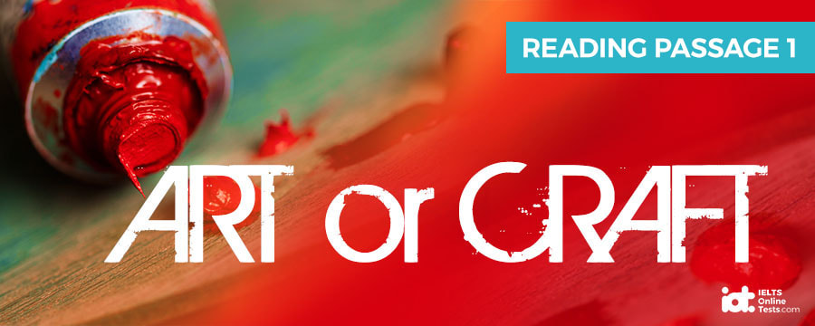
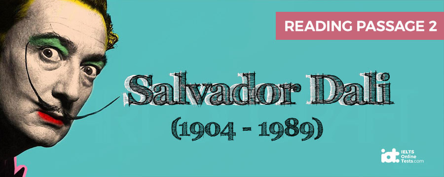
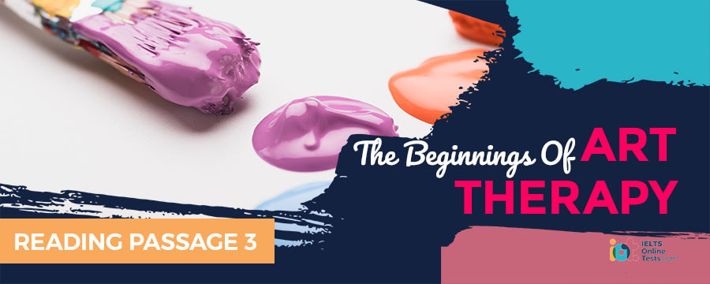

Part 1
READING PASSAGE 1
Read, the text below and answer Questions 1-10

Art or Craft?
Down the centuries, craftsmen have been held to be distinct from artists. Craftsmen, such as woodworkers and plasterers, belonged to their own guild, whilst the artist was regarded as a more solitary being confined to an existence in a studio or attic. In addition, whilst craftsmen could rely on a reasonably steady income, artists were often living such a hand-to-mouth existence that the term 'starving artist' became a byword to describe the impoverished existence of artists generally. Even today, the lifestyles of the craftsman and the artist could not be more different. However, what exactly separates craft from art from both a practical and a philosophical view?
One of the main distinctions between art and craft resides in the nature of the finished product or piece. Essentially, the concept of craft is historically associated with the production of useful or practical products. Art, on the other hand, is not restricted by the confines of practicality. The craftsman's teapot or vase should normally be able to hold tea or flowers while the artist's work is typically without utilitarian function. In fact, the very reason for art and its existence is purely to 'be', hence the furlined teacup created by Dada artist, Meret Oppenheim. The 'cup' as such was quite obviously never intended for practical use any more than a chocolate teapot might have been.
Artistry in craftsmanship is therefore merely a byproduct, since the primary focus is on what something does, not what it is. The reverse is true for art. Artistic products appeal purely at the level of the imagination. As the celebrated philosopher, Kant, stated, 'At its best, art cultivates and expands the human spirit.' Whether the artist responsible for a piece of art has sufficient talent to achieve this is another matter. The goal of all artists nevertheless remains the same: to produce a work that simultaneously transcends the mundane and uplifts the viewer. In contrast, the world of the craftsman and his work remain lodged firmly in the practicality of the everyday world. An object produced by an artist is therefore fundamentally different from the one produced by a craftsman.
Differences between the two disciplines of art and craft extend also to the process required to produce the finished object. The British philosopher R.G. Collingwood, who set out a list of criteria that distinguish art from craft, focused on the distinction between the two disciplines in their 'planning and execution'. With a craft, Collingwood argued, the 'result to be obtained is preconceived or thought out before being arrived at.' The craftsman, Collingwood says, 'knows what he wants to make before he makes it'. This foreknowledge, according to Collingwood, must not be vague but precise. In fact, such planning is considered to be 'indispensable' to craft. In this respect, craft is essentially different from art. Art is placed by Collingwood at the other end of the creative continuum, the creation of art being described as a process that evolves non-deterministically. The artist is, therefore, just as unaware as anyone else as to what the end product of creation will be, when he is actually in the process of creating. Contrast this with the craftsman who already knows what the end product will look like before he or she has even begun to create it.
Since the artist is not following a set of standard rules in the process of creation, he or she has no guidelines like the craftsman. Whilst the table or chair created by the craftsman, for example, has to conform to certain expectations in appearance and design, no such limitations are imposed on the artist. For it is the artist alone who, through a trial-and-error approach, will create the final object.
The object merely evolves over time. Whereas the craftsman can fairly accurately predict when a product will be finished taking technical procedures into account, the artist can do no such thing. The artist is at the mercy of inspiration alone and quite apart from not being able to have a projected finishing date, may never be able to guarantee that the object will be finished at all. Unfinished symphonies by great composers and works of literature never completed by their authors testify to this.
Having no definite end-goal in mind, the emphasis on the finished product that is true of craftsmanship is placed Instead on the act of creation itself with the artist. The creation of the work of art is an exploration and a struggle and path of discovery for the artist. It could be said that the artist is producing as much for himself as for those who will view the finished product. This act of creation is very distinct from the production of an object that is crafted, therefore. The goal of making craftwork is monetary compensation. Craft is produced for purchase and is essentially a money-generating industry. Any craftsman who followed the artistic approach to creation would soon be out of a job. Craftsmen are expected to deliver, artists are not. This is probably the most fundamental difference that separates the craftsman from the artist.
Part 2
READING PASSAGE 2
Read, the text below and answer Questions 11-26.

Salvador Dali
Few with even a passing knowledge of the art world are likely not to have heard of Salvador Dali, the eccentric and avant-garde exponent of the Surrealist movement. Love him or loathe him, Dali's work has achieved enduring worldwide fame as his name and work have become virtually synonymous with Surrealism itself. The artist's melting clock image is surely one of the most iconic paintings of the art world, whilst Dali's antics have become the stuff of anecdotes.
Born into a middle-class family in the Catalonian town of Figueres in north-eastern Spain, Dali (or Salvador Felipe Jacinto Dali Domenech, to give him his full name) aimed high from the beginning. In the artist's 1942 autobiography entitled 'The Secret Life of Salvador Dali', the artist wrote: 'At the age of six I wanted to be a cook. At seven I wanted to be Napoleon. And my ambition has been growing steadily ever since.' Such ambition and self-belief matured into full-blown arrogance in later years. An example of this is amply shown on an occasion when the artist felt the examiners of the Madrid Academy he was attending were well below par.
To a degree, his undeniably impressive and precocious talent excused his conceit. He was only 14 when his first works were exhibited as part of a show in Figueres. Then three years later he was admitted to the Royal Academy of Fine Arts of San Fernando, in Madrid. However, it wasn't long before Dali's highly developed sense of self-worth (or conceit, depending on how you view the artist) came to the fore and also affected the course of his life. Believing himself way superior to the Academy tutors, who nevertheless refused to grant him a degree, the rebellious artist left for Paris. There he hoped to avail himself of knowledge that he believed his tutors were not adequate to impart. He soon made the acquaintance of the French surrealists Jean Arp, Rene Magritte and Max Ernst and this would prove a turning point in Dali's artistic life.
Already familiar with the psychoanalytic theories of Sigmund Freud, Dali was to witness how the French surrealists were attempting to capture Freud's ideas in paint. The whole world of the unconscious sublimated into dreams was to become the content of these artists' work and later that of Dali's, too. International acclaim followed shortly after. In 1933 he enjoyed solo exhibitions in Paris and New York City, becoming, as one exhibition curator put it, 'Surrealism's most exotic and prominent figure'. Praise continued to be heaped on Dali as French poet and critic, Andre Breton, the leader of the Surrealist movement gave the artist his blessing to continue carrying the torch for the artistic movement, writing that Dali's name was 'synonymous with revelation in the most resplendent sense of the word'.
Dali's surrealist paintings were packed with Freudian imagery: staircases, keys, dripping candles, in addition to a whole host of personally relevant symbolism such as grasshoppers and ants that captured his phobias on canvas. Despite Dali's overt adulation for Freud, a meeting with the grandmaster of psychoanalysis proved somewhat unfortunate. On the occasion that Dali met Freud, he proceeded to sketch the latter in earnest. However, something about Dali's fervid attitude must have alarmed the psychoanalyst as he is said to have whispered to others in the room, 'The boy looks like a fanatic.'
Sometimes Dali came across as not only mad but also unintelligible, at least as far as his paintings were concerned. One work, 'The Persistence of Memory', was particularly singled out for the sheer confusion it caused amongst its viewers. Featuring melting clocks, swarming ants and a mollusc that was the deflated head of Dali in disguise, the images were so puzzling that one critic urged readers to 'page Dr. Freud' to uncover the meaning of the canvas. His work was, if nothing else, provocative and powerful.
With the passing years, Dali became ever more infatuated with money, admitting to a 'pure, vertical, mystical, gothic love of cash'. Accordingly, he indiscriminately endorsed a host of products for French and American TV commercials. Fie also never failed to promote himself and displayed increasingly exhibitionist behaviour as time went on. Most notably, he once turned up for a lecture in Paris in a Rolls Royce stuffed with cauliflowers. Fie obviously believed the slogan of one of his advertising campaigns for Braniff Airlines, where he declares 'If you got it, flaunt it.' As a more positive outcome of his love for money, Dali took on increasingly diverse projects, ranging from set design to designing clothes and jewellery. His critics, however, believed that early on in his career his love for money exceeded his dedication to producing great art, resulting in Dali producing 'awful junk' after 1939, according to one art critic.
Despite a lukewarm reception from critics, Dali's public popularity never declined. In 1974, at 70 years old, the Dali Theatre Museum opened in his hometown, Figueres. More of a surrealist happening than a museum, one exhibit was a long black Cadillac that rained inside itself whenever a visitor dropped a coin into the slot. Even today hundreds of thousands of visitors still tour the museum each year. Whatever your opinion of him, at least Dali is unlikely to ever be forgotten.
Part 3
READING PASSAGE 2
Read the text below and answer Questions 27-40.

The Beginnings of Art Therapy
Art therapy is a relative newcomer to the therapeutic field. Art therapy as a profession began in the mid-20th century, arising independently in English-speaking and European countries. Many of the early practitioners of art therapy acknowledged the influence of a variety of disciplines on their practices, ranging from psychoanalysis through to aesthetics and early childhood education. However, the roots of art as therapy go back as far as the late 18th century, when arts were used in the 'moral treatment' of psychiatric patients.
It wasn't until 1942, however, that the British artist Adrian Hill coined the term 'art therapy', as he was recovering from tuberculosis in a sanatorium. He discovered that therapeutic benefits could be derived from drawing and painting whilst recovering. Art, he claimed, could become therapeutic since it was capable of 'completely engrossing the mind... releasing the creative energy of the frequently inhibited patient'. This effect, argued Hill, could in turn help the patient as it would 'build up a strong defence against his misfortunes'.
In 1964, the British Association of Art Therapists was founded. Proponents of art therapy fell into one of two categories: those who believed that the therapeutic effect of art lay in its effectiveness as a psychoanalytic tool to assess a patient through their drawings and those who held the belief that art-making was an end in itself, the creative process acting therapeutically on the patient. The two practices, however, were not incompatible, a degree of overlap occurring between the two. A patient, for example, could produce work that could be analysed for content and forms of self-expression but which could also be a creative outlet at the same time.
Who Benefits from Art Therapy
Art therapy in all its forms has proved effective in the treatment of individuals suffering with a wide range of difficulties or disabilities. These include emotional, behavioural or mental health problems, learning or physical disabilities. These include emotional, behaviour or mental health problems, learning or physical disabilities, neurological conditions and physical illness. Therapy can be provided on a group or individual basis according to the clients' needs. Whether the approach adopted by the therapist is oriented towards a psychoanalytic or creative approach, the effect of therapy is multifold. Partaking in art therapy can raise a patient's self-awareness and enable them to deal with stress and traumatic experience. In addition, art therapy sessions can enhance a patient's cognitive abilities and help the patient enjoy the life-affirming pleasures of making art.
What an Art Therapy Session Involves
Typically, an art therapy session is fundamentally different from an art class in that the individual is encouraged to focus more on their internal feelings and to express them, rather than portray external objects. Although some traditional art classes may ask participants to draw from their imagination, in art therapy the patient's inner world of images, feelings, thoughts and ideas are always of primary importance to the experience. Any type of visual art and medium can be employed in the therapeutic process including painting, drawing, sculpture, photography and digital art.
Art therapy sessions are usually held by skilled and qualified professionals. The presence primarily of the therapist is to be in attendance, guiding and encouraging artistic expression in the patient, in accordance with the original meaning of the word for therapy derived from the Greek word 'therapeia', meaning 'being attentive to'.
The Regulation of Art Therapy
Requirements for those wishing to become an art therapist vary from country to country. In the USA, where entry to the profession is highly regulated, a master's degree in art therapy is essential. In addition, those applying for such a post must have taken courses in a variety of studio art disciplines in order to demonstrate artistic proficiency. On completion of the master's degree, candidates also have to complete a minimum of 1000 hours of direct client contact post-graduation that is approved by the American Art Therapy Association (AATA).
However, whilst entry to the profession is strictly regulated in the USA, the same does not hold true for other countries. The problem is that art therapy is still considered a developing field. As such, until it becomes truly established as a therapy, its practice and application will remain unregulated in many countries for some time yet.
Part 1
Questions 1-10
Complete the table below.
Choose 10 answers from the box and write the correct letter, A-L, next to questions 1-10.
Art | Craft | |
End Product | 1 | 2 |
3 | 4 | |
Act of Creation/ Production | 5 | 6 |
7 | 8 | |
9 | 10 |
A the finished object appeals on an emotional and spiritual level B the final product has no pretensions to being anything more than it appears C only a functional use is considered for the finished object D no practical purpose as such is envisaged for the created object E the process of creation is merely a means to an end F whether or not there is an end product, the product itself is secondary to the process of creation G not having to adhere to a set of rules, the process is a matter of experimentation H there is no margin of error for experimentation, all of the process following a set of guidelines I its goal is defined from the outset J the process is fluid and undefined K it is useful but not commercially viable L the production process is a mixture of following rules and experimentation |
Part 2
Questions 11-13
Complete each sentence with the correct ending, A-E, below.
| A. | of certain limitations in his artistic skills that became evident in his later works. | |
| B. | opened Dali's eyes to the psychoanalytic movement, the ideas of which he then incorporated into his works. | |
| C. | his artistic studies needed to be supplemented by going to Paris to meet the Surrealist artists. | |
| D. | dome art critics are less impressed with his work than the general public. | |
| E. | inspired Dali to focus on the psychoanalytic content of his artwork. |
Write the correct letter, A-E, next to questions 11-13.
11. Dali displayed a precocious talent from an early age; however, he was aware
12. Encountering the French Surrealist painters in Paris
13. Dali’s artistic legacy is secure although
Questions 14-16
Choose the correct letter, A, B, C or D
Questions 17-18
There are two correct answers.
Choose two letters from A, B, C, D and E.
What is Dali most likely to be remembered for?
Questions 19-21
Choose the correct letter, A, B, C or D.
Questions 22-26
Complete the summary below.
Use NO MORE THAN TWO WORDS from the passage for each answer.
Dali has managed to achieve 22 becoming the figurehead of the Surrealist movement. His sheer 23 which for some might have been interpreted as arrogance, led him to believe he was capable of achieving anything. Moving to France, where he encountered Surrealist artists, was a 24 in his life. Dali's work was chiefly inspired by Freud's 25 theories. However, as Dali became increasingly infatuated with money, the standard of his art declined. Despite the fact that his work is of varying quality, Dali will never 26 |
Part 3
Questions 27-33
Do the following statements agree with the information given in the text?
For questions 27-33, write:
| TRUE. | if the statement agrees with the information | |
| FALSE. | if the statement contradicts the information | |
| NOT GIVEN. | If there is no information on this |
27. The artist Adrian Hill was strongly influenced by psychoanalytic theories when formulating his ideas on art therapy.
28. Twentieth-century art therapy focuses on treating a client’s mental or physical health problems rather than dealing with moral issues.
29. Approaches to art therapy can be broadly considered to be creative or psychoanalytic; however, practitioners tend to avoid combining the two schools of practice.
30. Clients who respond best to art therapy have a previous background in art.
31. Art therapy sessions are more concerned with expression through art than on the created art itself.
32. Many art therapists are insufficiently qualified as they are not aware of the regulations regarding the practice of art therapy.
33. Art therapy sessions involve limited interaction between therapist and client.
Questions 34-37
Complete the sentences below.
Choose NO MORE THAN THREE WORDS from the passage for each answer.
The early pioneers of art therapy admitted that their beliefs had been shaped by a 34 influences.
Artist Adrian Hill realised the 35 of art as therapy, and coined the term 'art therapy' in 1942.
Those supporting art therapy advised a psychoanalytic approach or alternatively one that placed more emphasis on the 36 itself,
Whilst theories behind art therapy may differ, they are 37 in practice.
Questions 38-40
Complete the summary with the list of words, A-F.
Write the correct letter, A-F, in spaces 38-40 below.
| A. | capable | |
| B. | strong | |
| C. | keen | |
| D. | inhibited | |
| E. | creative | |
| F. | therapeutic |
| Modern-day art therapy has its beginnings in the 1940s. Adrian Hill, one of its early pioneers, realised that art therapy was effective in helping patients create a 38. resistance to psychological and social stresses. Hill considered that 39. patients would particularly benefit form having an artistic outlet. Art therapy then developed into two types of practice, one emphasising a psychoanalytic approach and the other a more 40. one. Today there is often an overlap between the two practices. |